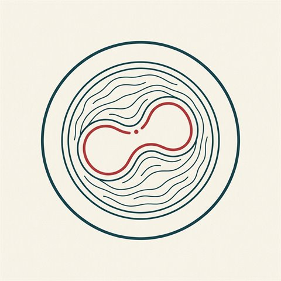
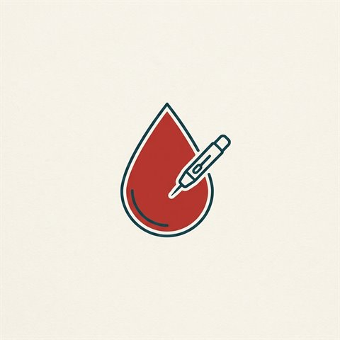
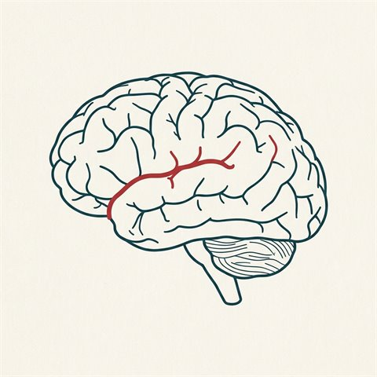
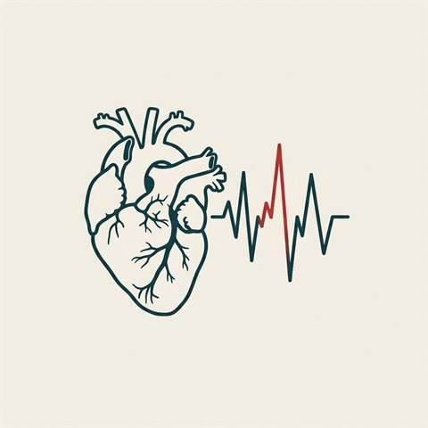
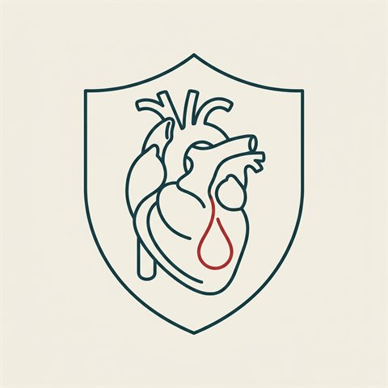

Patient Education
心血管衛教專區
 危險因子
危險因子高血壓
血壓分類、為何是「沉默的殺手」、你能做到的八大生活型態改變。
閱讀 →
危險因子膽固醇
LDL／HDL／三酸甘油酯、血脂參考數值，以及如何控制。
閱讀 →
危險因子糖尿病與心血管
為何大幅提高心臟病與中風風險，以及 ABC 控制重點。
閱讀 →
疾病中風
三種類型、F.A.S.T. 辨識、為何分秒必爭、風險與預防。
閱讀 →
疾病心房顫動
中風風險約 5 倍、診斷，以及抗凝／心率／節律三方向治療。
閱讀 →
預防保健保健八要素
Life's Essential 8：四項健康行為＋四項健康因子。
閱讀 →